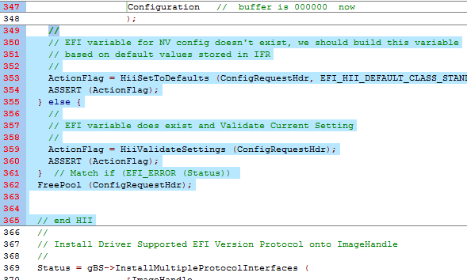
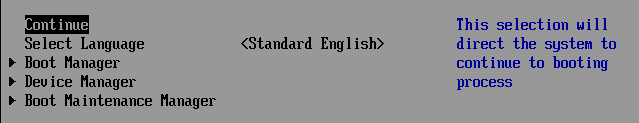

Lab 3. Updating your driver to initialize data from the VFR data to the HII Database
In this lab, you’ll learn how to update your driver to initialize the data according to the defaults set in the .VFR file. Thus when the user enters your driver’s menu for the first time, the values will display the defaults according to the .VFR file settings. You will also learn the rich set of HII function calls that are part of the MdeModulePkg in the HiiLib by reviewing the “MdeModulePkg Document.chm”.
Lab 3a. Add HII Library Calls to Your Driver
For this lab you will update the following files: MyWizardDriver.inf, MyWizardDriver.h, and MyWizardDriver.c
- Update the MyWizardDriver.inf file
- Add the following package (as shown below):
The HII Library in the MdeModulePkg has many functions to help with Communication to/from the Hii Database and Hii forms. One function call HiiSetToDefaults will compare the default settings from the .VFR file and update the driver’s configuration buffer according to the settings in the .VFR file.
MdeModulePkg/MdeModulePkg.dec
Note: For other functions from the HII Library, open the .chm file “MdeModulePkg Document.chm” and search for HiiLib.h.
3). Add the following library class (as shown below):
HiiLib
4). Save MyWizardDriver.inf
5). Update the MyWizardDriver.h file
6). Add the following code (as shown below):
#include <Library/HiiLib.h>
7). Save MyWizardDriver.h
8). Update the MyWizardDriver.c file
9). Add Locals: first add 2 locals for your drivers configuration buffer and a boolean flag from the Hii Library calls
Add the following at Approx. Line 190.
MYWIZARDDRIVER_CONFIGURATION *Configuration;
BOOLEAN ActionFlag;
10). Add the following to the MyWizardDriverDriverEntryPoint entry point funtion to line 319, approximately after “BufferSize =” as shown below
// Begin code
//
// Initialize configuration data
//
Configuration = &PrivateData->Configuration;
ZeroMem (Configuration, sizeof (MYWIZARDDRIVER_CONFIGURATION));
//
// Try to read NV config EFI variable first
//
ConfigRequestHdr = HiiConstructConfigHdr (&mMyWizardDriverFormSetGuid, mIfrVariableName, mDriverHandle[0]);
ASSERT (ConfigRequestHdr != NULL);
// End code
11). Modify the following lines:
@~338: remove: “&PrivateData->” from the “&PrivateData->Configuration”
@~342: remove line: ZeroMem (&PrivateData->Configuration, sizeof (MYWIZARDDRIVER_CONFIGURATION));
@~347: remove: “&PrivateData->” from the “&PrivateData->Configuration”

12). Add the following code to the MyWizardDriverDriverEntryPoint entry point code at approximately line 349 before
// Install Driver Supported EFI Version Protocol onto ImageHandle
You’re deleting the “}" and replacing it with the following code (as shown below). With this replacement we are adding an “else” to the “if” statement:
Note the “}” on line 361 is still matching the initial if statement. Make sure you do not have a duplicate “}”
//Begin code
//
// EFI variable for NV config doesn't exist, we should build this variable
// based on default values stored in IFR
//
ActionFlag = HiiSetToDefaults (ConfigRequestHdr, EFI_HII_DEFAULT_CLASS_STANDARD);
ASSERT (ActionFlag);
} else {
//
// EFI variable does exist and Validate Current Setting
//
ActionFlag = HiiValidateSettings (ConfigRequestHdr);
ASSERT (ActionFlag);
} // Match if (EFI_ERROR (Status))
FreePool (ConfigRequestHdr);
// end HII
// End code

13). Save the MyWizardDriver.c file
Build and test MyWizardDriver
- Open the Visual Studio Command Prompt
- Type build
- Type build run
- At the UEFI Shell prompt,type fs0:
- Type Load MyWizardDriver.efi and then Press “Enter”
- Type exit
- Now at the setup front page menu, select “Device Manager”

- Press “Enter” to enter “Device Manager”
- Inside the Device Manager menu press the down to “My Wizard Driver Sample Formset”

- Press “Enter”

- Press “Escape” to exit
- Press “Escape” to Exit the “Device Manager” Page
- Press Up Arrow to “Continue” and then Press “Enter” 
- Type "
Reset" to return to the Visual Studio Command Prompt

For any build issues copy the solution files from C:\Fw\LabSolutions\LessonE.3 NOTE: Del Directory C:\fw\edk2\Build\NT32IA32\DEBUG_VS2010x86\IA32\MyWizardDriver before the Build command to build the MyWizardDriver Clean
Lab 3b. Add your Driver to the platform
As of now, your driver needs to be soft loaded each time from the shell prompt. In this lab, you’ll update the platform .FDF file to force your driver to load as part of the platform UEFI driver.
- Open to update: C:\fw\edk2\Nt32PkgNt32Pkg.Fdf
- Add the following code (as shown below before “
!if $(BUILD_NEW_SHELL) == TRUE” ):
INF MyWizardDriver/MyWizardDriver.inf - Save Nt32pkg.fdf
Build and test MyWizardDriver
- Open the Visual Studio Command Prompt
- Type build
- Type build run
- At the UEFI Shell prompt,type "
Exit" - Now at the setup front page menu, select “Device Manager”
- Press “Enter” to enter “Device Manager”
- Inside the Device Manager menu Notice that the My Wizard Driver Sample Formset is added without having to issue the “Load” command from the shell prompt.
- Press “Escape” to exit the “Device Manager” Page
- Press Up Arrow to “Continue”
- Press “Enter”
- Type "
Reset" to return to the Visual Studio Command Prompt
For any build issues copy the solution files from C:\Fw\LabSolutions\LessonE.3
NOTE: Del Directory C:\fw\edk2\Build\NT32IA32\DEBUG_VS2010x86\IA32\MyWizardDriver before the Build command to build the MyWizardDriver Clean